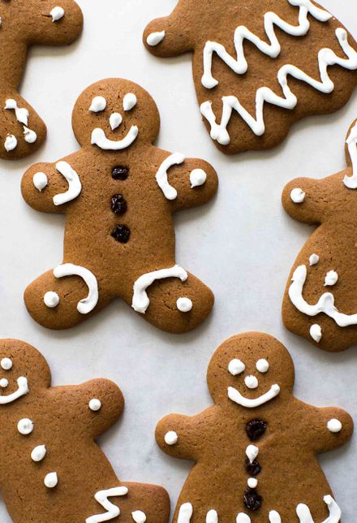

Gingerbread Men

Description
Bake a delicious batch of gingerbread men, perfect for any holiday party. Serves 30 people.
Ingredients
- 1 (3.5 ounce) package cook and serve butterscotch pudding mix
- 1 and a half cups of butter
- 1 and a half cups of packed brown sugar
- 1 Egg
- 1 and a half cups of all-purpose flour
- 1 and a half teaspoons of baking soda
- 1 and a half teaspoons of ground ginger
- 1 teaspon of ground cinnamon
Steps
- In a medium bowl, cream together the dry butterscotch pudding mix, butter, and brown sugar until smooth. Stir in the egg. Combine the flour, baking soda, ginger, and cinnamon; stir into the pudding mixture. Cover, and chill dough until firm, about 1 hour.
- Preheat the oven to 350 degrees F (175 degrees C). Grease baking sheets. On a floured board, roll dough out to about 1/8 inch thickness, and cut into man shapes using a cookie cutter. Place cookies 2 inches apart on the prepared baking sheets.
- Bake for 10 to 12 minutes in the preheated oven, until cookies are golden at the edges. Cool on wire racks.
Return home